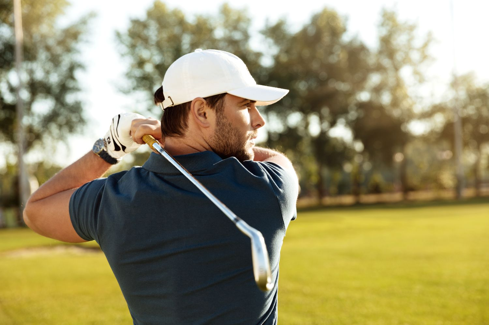

Gomito del golfista: perché fa male e come curarlo
Il gomito del golfista è una condizione che provoca dolore nella parte interna del gomito e può rendere difficili attività quotidiane come sollevare oggetti, stringere una mano o afferrare qualcosa. Non riguarda soltanto chi pratica golf: può interessare anche chi svolge lavori manuali o attività sportive che richiedono movimenti ripetuti del polso. Capire da cosa dipende il dolore e come gestirlo è importante per recuperare gradualmente forza e funzionalità.

Il gomito del golfista, chiamato anche epicondilite mediale o epitrocleite, è una condizione dolorosa che interessa i tendini dei muscoli coinvolti nella flessione del polso e nella presa. Spesso è associato a sovraccarichi e movimenti ripetuti. Il trattamento è generalmente conservativo e può comprendere la modifica temporanea delle attività che provocano dolore, esercizi progressivi e fisioterapia. I tempi di recupero variano in base alla durata dei sintomi e alla risposta individuale.
Che cos'è il gomito del golfista?
Il gomito del golfista è una condizione che interessa la parte interna del gomito, in prossimità dell'epitroclea, una prominenza ossea dell'omero. In questa zona si inseriscono i tendini di alcuni muscoli dell'avambraccio, coinvolti soprattutto nella flessione del polso e nella presa.
Quando questi tessuti sono sottoposti a carichi ripetuti o superiori alla loro capacità di tolleranza, possono comparire dolore e difficoltà nell'utilizzo del braccio. Il termine tradizionale è spesso utilizzato per descrivere un problema tendineo legato al sovraccarico, anche se non sempre è presente una semplice infiammazione.
Il disturbo viene associato al golf perché alcuni gesti di questo sport possono sollecitare la zona interessata. Tuttavia, può comparire anche in chi pratica tennis, sollevamento pesi o altri sport, così come in persone che svolgono lavori manuali o utilizzano ripetutamente strumenti e attrezzi.
Quali sono i sintomi del gomito del golfista?
Il sintomo principale è il dolore nella parte interna del gomito, che può iniziare gradualmente e diventare più evidente durante le attività che richiedono una presa forte o movimenti ripetuti del polso. In alcuni casi il fastidio è localizzato vicino all'osso, mentre in altri può estendersi verso l'avambraccio.
Il dolore può manifestarsi quando si sollevano borse, si stringono oggetti, si gira una maniglia o si eseguono esercizi con pesi. Alcune persone riferiscono anche una riduzione della forza della presa, soprattutto quando il movimento provoca fastidio.
Nelle fasi iniziali il disturbo può comparire soltanto durante uno sforzo. Se il problema persiste, il dolore può diventare più frequente e interferire con le normali attività quotidiane. La presenza e l'intensità dei sintomi variano da persona a persona e non permettono, da sole, di stabilire la gravità del problema.
Se il dolore è comparso dopo un trauma importante, è associato a gonfiore marcato o si accompagna a formicolio, perdita significativa di forza o difficoltà a muovere il gomito, è opportuno richiedere una valutazione medica per individuare la causa.
Quali sono le cause del gomito del golfista?
Il gomito del golfista è spesso associato a un sovraccarico dei tendini che partecipano alla flessione del polso e alla presa. Il problema può svilupparsi quando i tessuti vengono sottoposti a ripetuti sforzi senza un adeguato recupero oppure quando il carico aumenta rapidamente rispetto alla capacità di tollerarlo.
Tra le situazioni che possono contribuire alla comparsa dei sintomi ci sono l'utilizzo ripetuto di attrezzi, alcuni lavori manuali, gli esercizi di forza e i gesti sportivi che richiedono una presa intensa. Anche la ripresa dell'attività dopo un periodo di pausa può rappresentare un aumento significativo del carico, soprattutto se l'intensità viene incrementata troppo velocemente.
Non esiste però una causa unica valida per tutti. Per comprendere il problema è utile considerare le attività svolte, la frequenza degli sforzi, l'evoluzione dei sintomi e gli eventuali cambiamenti recenti nella routine lavorativa o sportiva.
Che differenza c'è tra gomito del golfista e gomito del tennista?
La differenza principale riguarda la zona del gomito in cui si manifesta il dolore. Il gomito del golfista interessa generalmente la parte interna, vicino all'epitroclea, mentre il gomito del tennista, noto anche come epicondilalgia laterale, provoca dolore nella parte esterna del gomito.
Le due condizioni possono essere associate a sovraccarichi dei tendini dell'avambraccio e a difficoltà nelle attività che richiedono forza di presa. Tuttavia, coinvolgono strutture differenti e possono richiedere una valutazione specifica per identificare i movimenti che provocano i sintomi.
La localizzazione del dolore è un elemento utile, ma non sempre sufficiente per distinguere le diverse cause. Una valutazione clinica permette di considerare anche la mobilità, la forza, la sensibilità e la risposta del gomito a determinati movimenti.
Come si diagnostica il gomito del golfista?
La valutazione del gomito del golfista parte generalmente dall'analisi dei sintomi e delle attività che li provocano. Il professionista raccoglie informazioni su quando è iniziato il dolore, quali movimenti lo aumentano e se ci sono stati cambiamenti recenti nel lavoro o nell'allenamento.
L'esame clinico può comprendere la palpazione della zona interna del gomito e alcuni test che valutano la risposta dei sintomi durante la flessione del polso o la presa contro resistenza. Vengono inoltre considerate la mobilità del gomito e del polso, la forza e l'eventuale presenza di altri segni che richiedano approfondimenti.
Gli esami strumentali non sono necessari in tutti i casi. Il medico può indicarli quando la diagnosi non è chiara, i sintomi persistono nonostante il trattamento o è necessario escludere altre condizioni. La scelta dipende dal quadro clinico e dai risultati della valutazione.
Come si cura il gomito del golfista?
Il trattamento è generalmente conservativo e punta a ridurre le sollecitazioni che provocano dolore, mantenendo per quanto possibile un livello di attività compatibile con i sintomi. Non è sempre necessario interrompere completamente il lavoro o lo sport: spesso è più utile modificare temporaneamente i gesti, la frequenza degli sforzi o il carico utilizzato.
La gestione del problema può comprendere un ritorno graduale alle attività, esercizi mirati per migliorare la capacità dei muscoli e dei tendini di tollerare il carico e indicazioni per organizzare meglio le pause e gli allenamenti. La scelta delle strategie dipende dalla durata del disturbo, dall'intensità del dolore e dalle esigenze della persona.
In alcuni casi possono essere valutate anche altre opzioni terapeutiche con il medico. Non esiste, però, un trattamento valido per tutti e nessun singolo intervento garantisce una risoluzione immediata. L'obiettivo è migliorare progressivamente la funzione del braccio e la tolleranza alle attività che provocano i sintomi.
Quali esercizi fare per il gomito del golfista?
Gli esercizi per il gomito del golfista possono contribuire al recupero della forza e della capacità dei tendini di tollerare gli sforzi. Devono essere scelti in base alla condizione iniziale e alla risposta del gomito, evitando di aumentare il carico troppo rapidamente.
Nelle fasi iniziali il programma può includere movimenti controllati del polso e contrazioni muscolari con un carico tollerabile. In seguito, quando i sintomi lo consentono, possono essere introdotti esercizi di rinforzo progressivo dei muscoli dell'avambraccio, compresi lavori in cui il muscolo sviluppa forza mentre si allunga.
La progressione dovrebbe essere graduale: un leggero fastidio durante alcuni esercizi può essere tollerabile, ma un dolore intenso o un peggioramento significativo che persiste dopo l'attività suggeriscono la necessità di rivedere il carico. Il programma va adattato anche agli obiettivi della persona, che si tratti di riprendere uno sport, allenarsi in palestra o svolgere il proprio lavoro senza limitazioni.
Quanto tempo ci vuole per guarire dal gomito del golfista?
I tempi di recupero del gomito del golfista variano in base alla durata dei sintomi, al livello di irritabilità del tendine, alle attività quotidiane e alla risposta al trattamento. Alcune persone migliorano nell'arco di alcune settimane, mentre nei disturbi persistenti il recupero può richiedere diversi mesi.
La riduzione del dolore non coincide sempre con il completo recupero della capacità di sostenere carichi elevati. Per questo motivo, oltre a osservare i sintomi, è importante verificare se il braccio riesce gradualmente a tollerare le attività lavorative e sportive che prima provocavano fastidio.
Un ritorno troppo rapido agli sforzi abituali può riaccendere i sintomi. Al contrario, una progressione adeguata permette di aumentare gradualmente il carico e di adattare gli esercizi ai miglioramenti ottenuti.
Quando si può tornare a fare sport o lavorare senza dolore?
Il ritorno alle attività dipende dalla capacità del gomito di tollerare i movimenti e gli sforzi richiesti. Chi pratica golf o altri sport con movimenti ripetuti del braccio dovrebbe riprendere gradualmente, evitando di passare improvvisamente da un periodo di ridotta attività a sessioni intense e prolungate.
Lo stesso principio vale per chi svolge lavori manuali. Può essere utile modificare temporaneamente la frequenza dei gesti ripetitivi, alternare le attività quando possibile e aumentare gradualmente la durata del lavoro più impegnativo.
La ripresa dovrebbe considerare la risposta del gomito durante l'attività e nelle ore successive. Se il dolore aumenta in modo significativo o rimane più intenso a lungo, è opportuno rivalutare il carico prima di proseguire con la progressione.
Come prevenire il gomito del golfista?
La prevenzione si basa soprattutto sulla gestione dei carichi e sull'adattamento progressivo alle attività che sollecitano l'avambraccio. Aumentare gradualmente la durata e l'intensità degli allenamenti, evitare incrementi improvvisi degli sforzi e prevedere un recupero adeguato può aiutare a ridurre il rischio di sovraccarico.
È utile prestare attenzione anche alla tecnica dei gesti sportivi e lavorativi, all'organizzazione delle attività e alla preparazione muscolare. Se il dolore compare ripetutamente, continuare a svolgere gli stessi movimenti senza modifiche può mantenere il problema nel tempo.
Non sempre è possibile prevenire completamente il disturbo. Intervenire precocemente sui sintomi e adattare le attività in base alla risposta del braccio può però aiutare a evitare che le limitazioni diventino più importanti.
Il ruolo della fisioterapia nel gomito del golfista
La fisioterapia per il gomito del golfista può aiutare a individuare i movimenti che provocano dolore e a costruire un programma di recupero adeguato alle esigenze della persona. Il percorso può comprendere esercizi progressivi, indicazioni sulla gestione del carico e strategie per riprendere gradualmente le attività quotidiane o sportive.
Il lavoro riabilitativo viene adattato nel tempo sulla base dei sintomi, della forza e della capacità del braccio di tollerare gli sforzi. Non si tratta soltanto di ridurre il dolore, ma anche di recuperare la funzione necessaria per svolgere le attività desiderate.
Il confronto con il fisioterapista permette di monitorare i progressi e modificare il programma quando necessario. Se i sintomi non migliorano o compaiono segnali che suggeriscono una causa differente, può essere indicata una valutazione medica o un approfondimento diagnostico.
Il percorso con Matteo Fiorentini presso OsteoFisio REHAB
Da OsteoFisio REHAB, a Roma, il percorso fisioterapico viene impostato considerando i sintomi, le limitazioni funzionali e gli obiettivi della persona, che possono riguardare il lavoro, la vita quotidiana o il ritorno allo sport.
La valutazione permette di individuare le attività che sollecitano maggiormente il gomito e di definire una progressione di esercizi adeguata alla situazione. Il programma viene aggiornato in base alla risposta individuale, con l'obiettivo di recuperare gradualmente forza e capacità di utilizzare il braccio.
Ogni situazione richiede un approccio personalizzato. In presenza di dolore persistente, sintomi atipici o limitazioni importanti, può essere necessario coordinare il percorso con il medico per approfondire la causa del disturbo.
Hai dolore nella parte interna del gomito?
Se il fastidio limita il lavoro, l'attività sportiva o i gesti quotidiani, puoi contattare OsteoFisio REHAB per ricevere informazioni sul percorso fisioterapico e sulle possibilità di valutazione.
Contatta OsteoFisio - RehabDomande frequenti sul gomito del golfista
Quanto dura il gomito del golfista?
La durata dipende dalla gravità dei sintomi, da quanto tempo è presente il problema e dalle attività che sollecitano il gomito. Alcune persone migliorano in poche settimane, mentre i disturbi persistenti possono richiedere diversi mesi di gestione del carico e riabilitazione.
Il gomito del golfista guarisce da solo?
In alcuni casi i sintomi migliorano modificando temporaneamente le attività che provocano dolore e gestendo meglio i carichi. Se il fastidio persiste, peggiora o limita le normali attività, è opportuno richiedere una valutazione per individuare il percorso più adatto.
Posso continuare ad allenarmi con il gomito del golfista?
Dipende dall'intensità dei sintomi e dal tipo di allenamento. Spesso è possibile mantenere le attività che non aggravano il dolore, modificando temporaneamente gli esercizi che richiedono una presa intensa o movimenti ripetuti del polso. Il carico dovrebbe essere aumentato gradualmente.
Quali esercizi sono utili per il gomito del golfista?
Il programma può comprendere esercizi di mobilità e rinforzo progressivo dei muscoli dell'avambraccio, scelti in base alla tolleranza del gomito. La tipologia e l'intensità degli esercizi devono essere adattate alla situazione individuale.
Quando è consigliabile rivolgersi a un fisioterapista?
Una valutazione può essere utile quando il dolore persiste, limita le attività quotidiane o ritorna ogni volta che si riprende ad allenarsi. In presenza di trauma importante, perdita significativa di forza, formicolio o altri sintomi insoliti è opportuno rivolgersi anche a un medico.